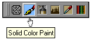
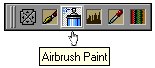
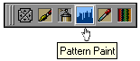
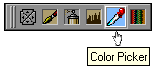
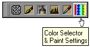
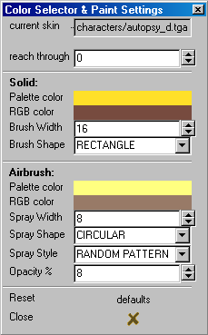

|

This button allows Solid Color Painting of the selected model's component skin texture.
To paint the texture press and hold the LMB and CMB together and drag the mouse cursor
across the area to be painted. Selected meaning if there is more then one component of a model
it will only paint that components skin texture without effecting any other component's texture.
It not only works in conjunction with the
Color Picker ,
described in more detail below, as one method of setting the color of the paint brush
but, with both active, it also effects the way different mouse buttons work.
One difference is the LMB, which normally, with a quick single click, will cause the
component the cursor is over in a view to be selected. Now it will select the color that the
cursor is over as the color setting for the Solid Color Paint brush.
It also works in conjunction with the
Color Selector & Paint Settings
which not only changes the color to paint with, but gives settings for the paint brush size and shape as well.
It does not effect the normal mouse button functions.
The ability to perform other editing functions will also remain in effect, such as dragging vertex handles,
selecting faces, zooming, panning, rotating and so on.
|
|
Airbrush Paint
|
cdunde - 19 Mar 2008
|
[ Top ]
|
|

Allows Multiple Color Painting of the selected model's skin texture.
Like the Solid Color Paint
this also works in conjunction with the
Color Picker ,
described in more detail below, as one method of setting the color of the paint brush
and, with both active, it also effects the way different mouse buttons work.
One difference is the LMB, which normally, with a quick single click, will cause the
component the cursor is over in a view to be selected. Now it will select the color that the
cursor is over as the primary, top or start, color setting for the Airbrush Paint brush.
The other difference is the MMB, which normally, with a quick single click, will cause the
view that the cursor is in to do an automatic zoom. Now it will select the color that the
cursor is over as the second, lower or end, color setting for the Airbrush Paint brush.
It also works in conjunction with the
Color Selector & Paint Settings
which not only changes the color to paint with, but gives settings for the paint brush size, shape and
available Airbrush effects as well.
It does not effect the normal mouse button functions.
The ability to perform other editing functions will also remain in effect, such as dragging vertex handles,
selecting faces, zooming, panning, rotating and so on.
|
|
|
Pattern Paint
|
cdunde - 19 Mar 2008
|
[ Top ]
|
|

Not functional at this time. Reserved for future use to allow Pattern Painting of the selected
model's skin texture.
|
|
Color Picker
|
cdunde - 19 Mar 2008
|
[ Top ]
|
|

When active along with one of the paint tool brushes, such as the
Solid Color Paint tool,
you can pick a color to set the paint brush to use by clicking the LMB on a pixel in any of the editor's
textured views or the Skin-view.
If the Airbrush Paint tool
is active, doing a click on a pixel using your middle mouse button will
set the second, or lower, color of the airbrush as well. A LMB click over a pixel in any of
the editor's textured views or the Skin-view will set its primary, top or start, color setting.
Activated by itself, without one of the paint brush tools, will stop the LMB single click
component selection function and the MMB auto zoom function. All other functions will remain
in effect and active. Meaning you can edit and paint without having to change modes.
Also, the color that is picked comes directly from the skin texture and not the view itself,
which avoids any possible view settings distortion of that color.
|
|
Color Selector & Paint Settings
|
cdunde - 19 Mar 2008
|
[ Top ]
|
|

This button opens the dialog to select colors manually from either a palette,
if the model uses one, or the RGB color selector.
There are also various other settings for all of the paint brush tools.
Basically, all of the painting tools and functions are still very much in the development stages
(which we could use assistance with).
Meaning, you may get some strange results at times so be sure to have a backup of your skin textures.
Although, unless you save the model or texture, any painting changes will not be saved automatically.
Still, it is a matter of good editing practice to get into. Now to cover the specific items of this dialog.
|

current skin : This will display what ever skin is currently selected and it will update
itself if another skin should be selected.
reach through : Because a model may have other components on top or below your work area
and other factors, using this function will allow you to reach through those laired faces and
get to the ones you want to paint.
Solid: These are primarily the settings for the
Solid Color Paint tool.
However, they also apply to the
Airbrush Paint tool.
Palette color and RGB color : If a model texture has a palette,
such as Quake 2 models do, the Palette color will be active, if not then the
RGB color will be active. Both are never active at the same time, the program makes the selection.
Brush Width and Brush Shape : These are the settings for the
Solid Color Paint tool only
with a preset list for its shapes.
Airbrush: These are settings strictly for the
Airbrush Paint tool appling to
its secondary color, its primary color is above.
Palette color and RGB color : If a model texture has a palette,
such as Quake 2 models do, the Palette color will be active, if not then the
RGB color will be active. Both are never active at the same time, the program makes the selection.
Spray Width and Spray Shape : These are the settings for the
Airbrush Paint tool only
with a preset list for its shapes.
Spray Style and Opacity % : At this point Spray Style is purely
experimental which can result in some rather unpredictable results, use this with caution.
The test settings are Spray Width at an even value number, Spray Shape set to RECTANGLE,
Opacity % set to a low numeric value (10 or less) and with the painting being done in the
Skin-view.
Opacity % : This is very useful in spreading a color blend between the
primary (start) and secondary (end) color spread.
|
The QuArK Development Team is very interested in the assistance of others either in the way of pixel color
formulas, methods and\or coding to further enhance and improve these functions. If you feel you can
contribute please contact us.
|